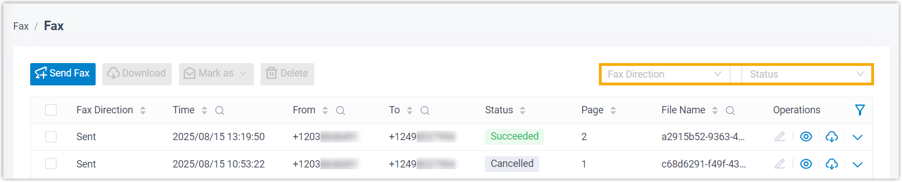
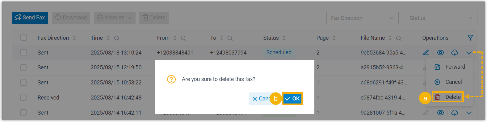
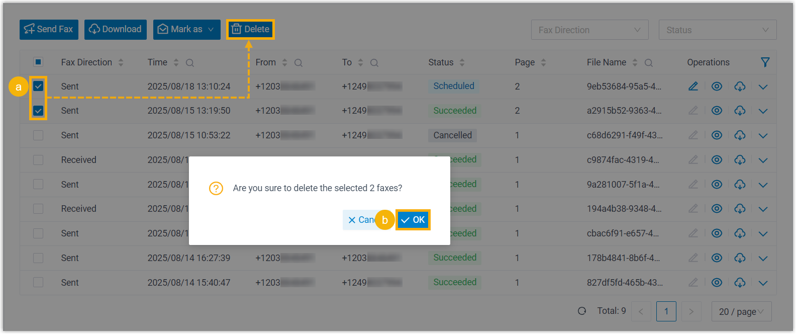

Delete Faxes
When faxes are sent or received through your Linkus Desktop Client, the activities are logged and the associated fax files are saved. If you don't need specific faxes, you can delete them as needed.
Note:
- Deleting an outbound fax that has NOT been sent will cancel the delivery.
- Deleting a fax will remove both fax log and the associated fax file from your Linkus.
Procedure
- Log in to Linkus Desktop Client, go to .
- Optional: At the top of the list, set filters to locate
the faxes that you want to delete.

Item Description Fax Direction Select Sent or Received to filter sent or received faxes. Status Select a status to filter faxes. Note: To narrow down the search result, you can use the column filters in the list. - Delete faxes as needed.
Scenario Description Delete a fax 
- On the right of the desired fax log, click , then select Delete.
- In the pop-up window, click OK.
Delete multiple faxes 
- Select the checkboxes of the desired fax logs, click Delete.
- In the pop-up window, click OK.
Result
The fax logs and the associated fax files are deleted.